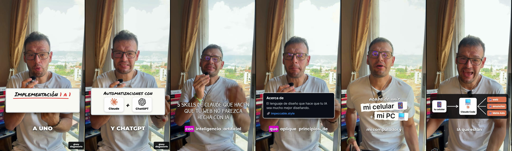

Tu editor de reels con IA, en tu computador
Es una skill de Claude Code. Le pasas un video tuyo hablando a cámara y te lo devuelve editado y listo para subir: sin tus equivocaciones, con subtítulos, tarjetas que aparecen justo cuando hablas, música y tu llamado a la acción.

- 💻 Necesitas un computador con Windows o Mac (no sirve desde el celular).
- 💳 Necesitas Claude con plan de pago (Pro o superior). Claude Code no viene en el plan gratis.
- ⏱️ La primera vez tarda entre 20 y 40 minutos: Claude instala los programas y descarga el modelo que transcribe tu voz (unos 3 GB). Después, editar un reel de un minuto toma unos 20-30 minutos y casi todo lo hace solo.
Ten tu cuenta de Claude con plan Pro
Si ya pagas Claude Pro o Max, salta al paso 2. Si no, crea tu cuenta y activa el plan:
Ver planes de Claude →El plan Pro es el más económico que incluye Claude Code. Todo lo pesado (transcribir y exportar) corre en tu computador, así que no gasta tu plan.
Descarga la app de Claude
Instala la aplicación de escritorio de Claude e inicia sesión con tu cuenta.
⬇ Descargar Claude para el computadorÁbrela al terminar y entra con el mismo correo de tu cuenta.
Abre Claude Code
Dentro de la app, entra a la pestaña Code. Ahí Claude puede trabajar con los archivos de tu computador.
App de Claude → pestaña Code → elige una carpeta
Crea una carpeta para tus videos (por ejemplo Documentos\Mis reels) y elígela como carpeta de trabajo. Si Claude te pide permisos para leer archivos o correr comandos, acéptalos.
¿Prefieres la terminal? (opcional)
También puedes instalar Claude Code con un comando. En Windows abre PowerShell y pega:
irm https://claude.ai/install.ps1 | iex
En Mac abre Terminal y pega:
curl -fsSL https://claude.ai/install.sh | bash
Cierra y vuelve a abrir la terminal, entra a tu carpeta de videos y escribe claude. La primera vez te pide iniciar sesión en el navegador.
Instala la skill (copia y pega)
En Claude Code pega este mensaje y dale Enter. Claude descarga la skill, revisa qué programas te faltan y te ayuda a instalarlos uno por uno:
❯ Instala esta skill de Claude Code: clónala desde https://github.com/diegodoc11/video-imperio-edit dentro de ~/.claude/skills/video-imperio-edit y corre su instalador (scripts/instalar.py). Si falta algún programa (Git, Python, Node.js, ffmpeg o whisper.cpp), instálalo conmigo paso a paso.
Cuando el instalador diga "Listo para usar", cierra esa conversación y abre una nueva: así Claude carga la skill recién instalada.
Si te pide permiso para instalar programas, acepta. En Windows suele usar Scoop (un instalador de programas gratuito); en Mac, Homebrew.
Edita tu primer reel
Graba tu video vertical, déjalo en tu carpeta y escríbele a Claude Code:
❯ Edita este video con video-imperio-edit, estilo fucsia: mi-video.mp4
Elige tu estilo
Qué hace Claude
- Limpia el video: quita silencios y las frases que repetiste por equivocarte.
- Transcribe palabra por palabra, con el segundo exacto de cada una.
- Arma la edición: gancho desde el segundo 0, subtítulos, cada tarjeta entra cuando la nombras y nada te tapa la cara.
- Te da una vista previa en el navegador. Pides cambios ("el título más corto", "pon mi logo", "cambia el color").
- Cuando apruebas, exporta el video final en 1080×1920 listo para Reels, TikTok o anuncios.
Cómo grabar para que quede mejor
- Vertical, tú solo, mirando a cámara. Sirve el celular.
- Cabeza y pecho en cuadro: el espacio del pecho es donde aparecen las tarjetas.
- Buena luz y buen audio (un micrófono de solapa hace mucha diferencia).
- Si te equivocas, repite la frase completa y sigue: la skill corta la toma mala.
- Termina diciendo tu llamado a la acción ("comenta CLASE y te lo envío").
Si algo no funciona
No me aparece la pestaña "Code" en la app
Revisa que tu plan sea Pro o superior y que la app esté actualizada. Si aún no aparece, usa la opción de la terminal del paso 3.
Claude dice que falta Git, Python, Node.js, ffmpeg o whisper.cpp
Dile "instálalo conmigo" y acepta los permisos. En Windows, si te lo pide, también puedes pegar esto en PowerShell: Set-ExecutionPolicy -Scope CurrentUser RemoteSigned, luego irm get.scoop.sh | iex y después scoop install git python nodejs-lts ffmpeg whisper-cpp. Cierra y abre la app al terminar.
Claude no usa la skill cuando le pido editar
Abre una conversación nueva después de instalarla y menciona "video-imperio-edit" en tu mensaje.
¿Trae música?
No, por derechos de autor. Baja una pista libre de derechos (por ejemplo de Pixabay Music) y dile a Claude "usa esta música: [archivo]". Los efectos de sonido sí vienen incluidos.
Mi video trae una marca de agua abajo (BIGVU u otra app)
Dile a Claude que la quite: la saca del cuadro con un pequeño acercamiento, sin taparla con cajas.
¿Cuánto tarda y cuánto gasta de mi plan?
Un reel de un minuto: unos 5 minutos preparándolo, el tiempo que tú tardes en aprobar la vista previa y unos 10 minutos exportando. Transcribir y exportar corren en tu computador; Claude solo diseña y revisa, así que el consumo del plan es bajo.
¿Sirve para videos horizontales o de pantalla?
No. Es para videos verticales de una persona hablando a cámara.
Esto es solo 1 de los agentes de Imperio
Este editor te ahorra horas de edición. Pero en Imperio tengo todo un equipo de agentes de IA que hace el trabajo de marketing por ti y genera las ventas del negocio:
- ✍️ Escriben tus guiones, tus anuncios y tu video de ventas (VSL).
- 🎬 Editan tus reels y crean anuncios animados, como este editor.
- 📊 Montan y ajustan tus campañas en Meta Ads.
- 🖼️ Diseñan tus carruseles y miniaturas.
- 💬 Responden por WhatsApp e Instagram y agendan a tus clientes.
Haces en 3 días lo que antes te tomaba 30.
Es exactamente lo mismo que usan mis clientes, que han sumado entre 5.000 y 10.000 dólares extra cada mes a su facturación.
Escríbeme “IMPERIO” por Instagram →Te cuento cómo funciona y si encaja con tu negocio.